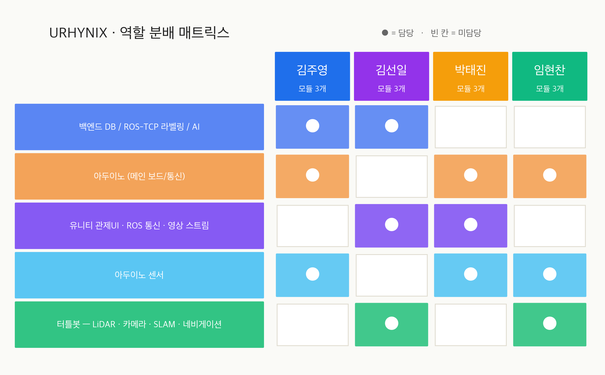
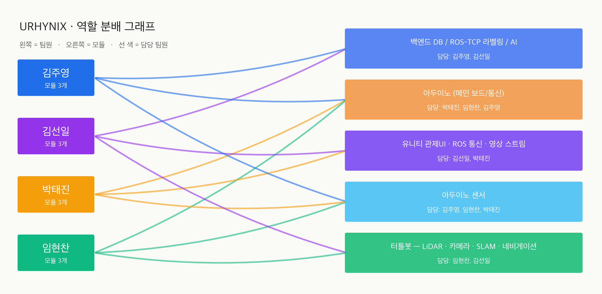

한 사람이 다 하는 프로젝트가 아니다. 각자의 라인을 잡고, 겹치는 곳에서 협업한다. 펼치면 어떤 모듈을 맡는지 보인다.
AI · 백엔드 · 임베디드 데이터 라인. 센서 데이터를 받아 분류하고, DB에 쌓고, 발표 지표를 뽑는 사람.
주요 협업: 김선일과는 백엔드/AI 공동, 임현찬·박태진과는 센서 공동, 박태진·임현찬과는 아두이노 메인 공동.
통신 · 관제 · 로봇 통합 라인. ROS-TCP로 데이터를 끌어와 Unity 관제 화면에 박고, 터틀봇 주행도 같이 챙긴다.
주요 협업: 가장 많은 라인을 잇는다. 김주영과 백엔드, 박태진과 Unity, 임현찬과 터틀봇 — 사실상 통합자 역할.
하드웨어 ↔ 클라이언트 ↔ 센서 라인. 보드와 카메라를 손으로 만지고, Unity에서 그 결과가 보이도록 화면 쪽을 같이 잡는다.
주요 협업: 김선일과 Unity 클라이언트, 임현찬·김주영과 아두이노 메인과 센서. 발표 환경 세팅의 핵심.
임베디드 · 로봇 라인. 보드부터 터틀봇 SLAM/Nav2까지 — "움직이는 것"을 책임진다.
주요 협업: 김주영·박태진과 센서, 박태진·김주영과 아두이노 메인, 김선일과 터틀봇. 하드웨어 디버깅의 중심.

